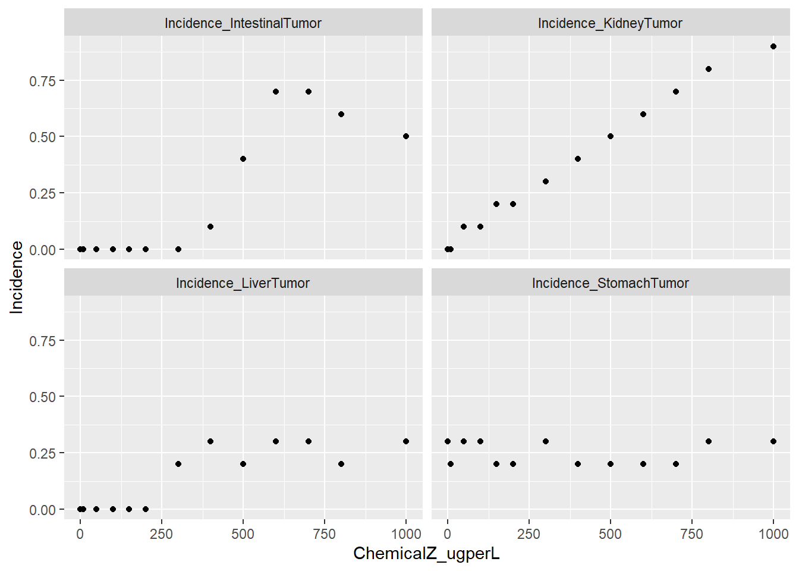
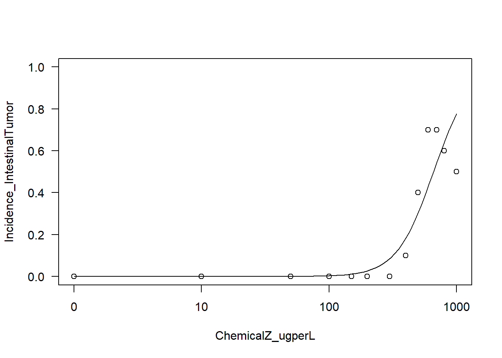
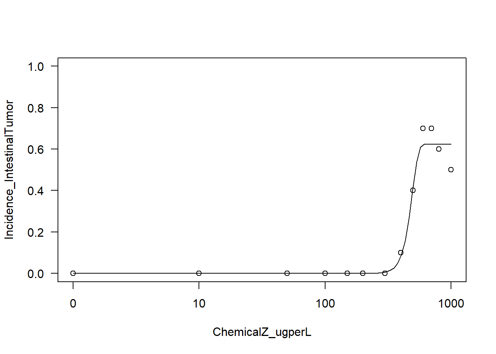
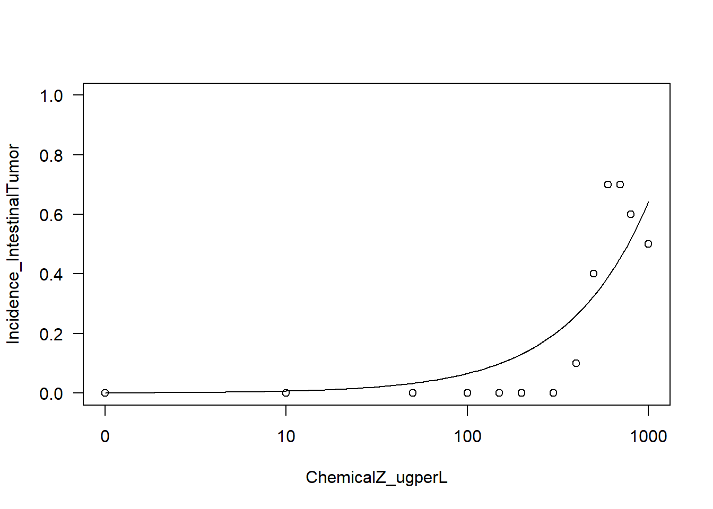
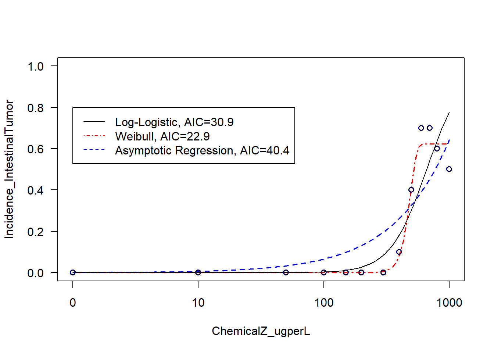

if (!require("Hmisc")) install.packages("Hmisc");
if (!require("drc")) install.packages("drc");
if (!require("remotes")) install.packages("remotes");
if (!require("bmd")) remotes::install_github("DoseResponse/bmd")
if (!require("tidyr")) install.packages("tidyr");Dose response modelling
MVEN10 Risk Assessment in Environment and Public Health
Exercise overview
We will search for effects and fit different dose response models to toxicity data R.
Background
Dose response modelling is a key component of hazard assessment. It is includes testing if there is an effect and using models to find a lowest dose where there is no effect. in this exercise, we do basic dose response analysis. In a later exercise, we introduce benchmark dose modelling which is using more advanced methods to consider uncertainty.
Purpose
- To extract output values from a common environmental exposure assessment model
Content
Plotting dose response data
Testing for an effect using hypothesis testing
Fitting dose response curves
Reporting
If present, no report needed. In case you do this on your own, make sure you provide
References
Tutorial example from dose response modelling in R from the TAME Toolkit A part of the code is taken and modified from a TAME tutorial on dose response modelling. The original code is found here
Get started
Install required R packages
Load R packages for this session
# The describe function in the Hmisc package will be used to summarize a
# description of the dataset
library(Hmisc)
# drc package will be used create and plot dose response models
library(drc)
#bmd package will be used to calculate the benchmark dose
library(bmd)
#dplyr and tidyr packages for data wrangling
library(dplyr)
library(tidyr)
#ggplot package for plotting
library(ggplot2)Dose response data
Load example dataset
Let’s start by loading the dataset needed for this training module. This dataset is a mock example that was generated for the purposes of this training module, in order to best capture variable types of dose-response relationships and resulting curve fits.
This specific dataset analyzes the relationship between exposure to a fictional chemical, chemical Z, in drinking water and tumor incidence in the stomach, intestine (small and/or large), kidney, and liver in mice. These mice were evaluated in a traditional two-year animal bioassay setting.
Note that animals are assumed to drink equivalent amounts of water each day for simplicity.
dose_response.data <- read.csv("../data/DoseResponseData.csv") # replace path to where you placed the csv fileView data
View(dose_response.data) # when rendering you might want to uncomment this command, by putting a # infront of itWith this, we can see that data are included for various chemical Z doses (noted in the first column), followed by a column noting the total number of animals tested per dose (in the second column). Then, columns are included describing the number of animals, followed by incidence, of tumor formation across each tissue target of interest (i.e., stomach, intestine, kidney, and liver).
Viewing a quick summary of the values contained within this dataset
summary(dose_response.data) ChemicalZ_ugperL TotalNoAnimals_Tested NoAnimals_StomachTumor
Min. : 0 Min. :10 Min. :2.000
1st Qu.: 100 1st Qu.:10 1st Qu.:2.000
Median : 300 Median :10 Median :2.000
Mean : 370 Mean :10 Mean :2.462
3rd Qu.: 600 3rd Qu.:10 3rd Qu.:3.000
Max. :1000 Max. :10 Max. :3.000
Incidence_StomachTumor NoAnimals_IntestinalTumor Incidence_IntestinalTumor
Min. :0.2000 Min. :0.000 Min. :0.0000
1st Qu.:0.2000 1st Qu.:0.000 1st Qu.:0.0000
Median :0.2000 Median :0.000 Median :0.0000
Mean :0.2462 Mean :2.308 Mean :0.2308
3rd Qu.:0.3000 3rd Qu.:5.000 3rd Qu.:0.5000
Max. :0.3000 Max. :7.000 Max. :0.7000
NoAnimals_KidneyTumor Incidence_KidneyTumor NoAnimals_LiverTumor
Min. :0.000 Min. :0.0000 Min. :0.000
1st Qu.:1.000 1st Qu.:0.1000 1st Qu.:0.000
Median :3.000 Median :0.3000 Median :2.000
Mean :3.692 Mean :0.3692 Mean :1.385
3rd Qu.:6.000 3rd Qu.:0.6000 3rd Qu.:3.000
Max. :9.000 Max. :0.9000 Max. :3.000
Incidence_LiverTumor
Min. :0.0000
1st Qu.:0.0000
Median :0.2000
Mean :0.1385
3rd Qu.:0.3000
Max. :0.3000 With this data summary, we can answer Environmental Health Question 1: Which target tissue demonstrated the overall highest incidence of tumor formation from any single dose of Chemical Z?
Answer: The kidney indicates a maximum of 9 animals with tumors developing from a single dose, representing an alarming incidence rate of 90%.
Overall, we can see that there are 4 disease outcomes included in this dataset:
- stomach tumors
- intestinal tumors
- kidney tumors
- liver tumors
All with observed incidences that depend upon the exposure concentration of Chemical Z
Plotting dose response data
Let’s plot each tumor incidence against exposure concentration together in a 2x2 plot.
Here, the y-axis will range from 0 to 1, with 0 indicating no incidence of tumors and 1 indicating all animals that were tested acquired tumors.
# select columns and modfify the data structure into long format to allow for efficient plotting
df <- dose_response.data %>%
select(!starts_with("NoAnimals")) %>%
pivot_longer(cols=starts_with("Incidence"), names_to = "Target_tissue", values_to = "Incidence")
# plot using ggplot
ggplot(df,aes(x=ChemicalZ_ugperL,y=Incidence)) +
geom_point() +
facet_wrap(~Target_tissue) #this command makes it into one subplot per endpoint
Testing for an effect
Even though points show a pattern with dose, it is important to show by performing a statistical test that differences over dose is deviating from random noise. For this we derive a simple statistical test.
Let use \(\mu_i\) to denote the expected incidence in dose group \(i\), where \(i=1,\ldots,n\) where \(n\) is the number of dose groups.
We want to test if all expected values are equal versus they are not. In hypothesis testing this is formulated by a null hypothesis that we compared to an alternative hypothesis.
\(H_0: \mu_1=\mu_2=\ldots=\mu_{n}\) against \(H_1: \text{at least one not equal}\)
One way to proceed is to assume that incidence at different doses are normally distributed and have the same variance (which is not entirely correct) and perform an ANalysis Of VAriance (ANOVA).
We decide that we reject the null hypothesis (\(H_0\)) when the p-value is less than our defined significance level of 5%.
In the code below we perform this test for the four target tissues. For each test output, the p-value is denoted by Pr(>F).
anova(lm(Incidence_IntestinalTumor ~ ChemicalZ_ugperL, data = dose_response.data))Analysis of Variance Table
Response: Incidence_IntestinalTumor
Df Sum Sq Mean Sq F value Pr(>F)
ChemicalZ_ugperL 1 0.80940 0.80940 34.47 0.0001075 ***
Residuals 11 0.25829 0.02348
---
Signif. codes: 0 '***' 0.001 '**' 0.01 '*' 0.05 '.' 0.1 ' ' 1anova(lm(Incidence_KidneyTumor ~ ChemicalZ_ugperL, data = dose_response.data))Analysis of Variance Table
Response: Incidence_KidneyTumor
Df Sum Sq Mean Sq F value Pr(>F)
ChemicalZ_ugperL 1 1.11841 1.11841 1325 8.102e-13 ***
Residuals 11 0.00928 0.00084
---
Signif. codes: 0 '***' 0.001 '**' 0.01 '*' 0.05 '.' 0.1 ' ' 1anova(lm(Incidence_LiverTumor ~ ChemicalZ_ugperL, data = dose_response.data))Analysis of Variance Table
Response: Incidence_LiverTumor
Df Sum Sq Mean Sq F value Pr(>F)
ChemicalZ_ugperL 1 0.167493 0.167493 29.117 0.000218 ***
Residuals 11 0.063276 0.005752
---
Signif. codes: 0 '***' 0.001 '**' 0.01 '*' 0.05 '.' 0.1 ' ' 1anova(lm(Incidence_StomachTumor ~ ChemicalZ_ugperL, data = dose_response.data))Analysis of Variance Table
Response: Incidence_StomachTumor
Df Sum Sq Mean Sq F value Pr(>F)
ChemicalZ_ugperL 1 0.000007 0.0000070 0.0024 0.9619
Residuals 11 0.032301 0.0029364 There is a range of statistical tests available for this question. Some make assumptions of the distribution of responses, others dont (also refereed to as non-parametric tests). Some tests are better than others. Which test that is most suitable and most efficient depends also on the type of response. We are not going into detail with the types of tests in this course. The key point is that it is important to apply some kind of test at this stage.
With these plots and statistical tests, we can answer Environmental Health Question 2: Which target tissue’s tumor incidence seems to not be related to dose?
Answer: Stomach.
We can also answer Environmental Health Question 3: When we generate scatter plots illustrating exposure concentration vs disease outcome, without curves fitted to the data, are we able to derive benchmark doses?
Answer: No, a curve fit is still needed to describe the overall trend in the dataset, which can then be used in the final calculation of a benchmark dose.
Dose response curve fitting
Alternative models
It is notable that there are many different packages that can be used to fit curves to data. Here, we incorporate the drc package to fit several types of potential curve fit models to this example dataset.
The drm function is specifically used from the drc package. Common parameters to consider when constructing the curve fit models in drm include the following:
1. Formula
This parameter describes the formula used to fit the data, formatted similar to a standard regression formula line of code. For the purposes of the current training module, this formula will be to fit to describe tumor incidence on chemical exposure concentration, which looks like this in the final code: Incidence_StomachTumor ~ ChemicalZ_ugperL
2. Data
This parameter specifies the dataset you are evaluating. For the current training module, we will be referring to the full dataframe, dose_response.data
3. Weights
This parameter contributes to determining how many observations are used at each dose/concentration, which can inform the model type. For the current training module, the weights in the dataset reflect the total number of animals tested at each exposure concentration.
4. Function (fct)
This parameter specifies which type of curve fit function you want to implement. Example functions include various types of log-logistic, generalized log-logistic, weibull, asymptotic regression, and Michaelis-Menten models. Note that getMeanFunctions() can be called for the full list of available functions:
getMeanFunctions()Log-logistic (ED50 as parameter) with lower limit at 0 and upper limit at 1
(2 parameters)
In 'drc': LL.2
Log-logistic (ED50 as parameter) with lower limit at 0
(3 parameters)
In 'drc': LL.3
Log-logistic (ED50 as parameter) with upper limit at 1
(3 parameters)
In 'drc': LL.3u
Log-logistic (ED50 as parameter)
(4 parameters)
In 'drc': LL.4
Generalized log-logistic (ED50 as parameter)
(5 parameters)
In 'drc': LL.5
Weibull (type 1) with lower limit at 0 and upper limit at 1
(2 parameters)
In 'drc': W1.2
Weibull (type 1) with lower limit at 0
(3 parameters)
In 'drc': W1.3
Weibull (type 1)
(4 parameters)
In 'drc': W1.4
Weibull (type 2) with lower limit at 0 and upper limit at 1
(2 parameters)
In 'drc': W2.2
Weibull (type 2) with lower limit at 0
(3 parameters)
In 'drc': W2.3
Weibull (type 2)
(4 parameters)
In 'drc': W2.4
Brain-Cousens (hormesis) with lower limit fixed at 0
(4 parameters)
In 'drc': BC.4
Brain-Cousens (hormesis)
(5 parameters)
In 'drc': BC.5
Log-logistic (log(ED50) as parameter) with lower limit at 0 and upper limit at 1
(2 parameters)
In 'drc': LL2.2
Log-logistic (log(ED50) as parameter) with lower limit at 0
(3 parameters)
In 'drc': LL2.3
Log-logistic (log(ED50) as parameter) with upper limit at 1
(3 parameters)
In 'drc': LL2.3u
Log-logistic (log(ED50) as parameter)
(4 parameters)
In 'drc': LL2.4
Generalised log-logistic (log(ED50) as parameter)
(5 parameters)
In 'drc': LL2.5
Asymptotic regression with lower limit at 0
(2 parameters)
In 'drc': AR.2
Shifted asymptotic regression
(3 parameters)
In 'drc': AR.3
Michaelis-Menten
(2 parameters)
In 'drc': MM.2
Shifted Michaelis-Menten
(3 parameters)
In 'drc': MM.3 5. Type
This parameter specifies the data type of the response (e.g., binomial, continuous, etc). For the current training module, we will select the binomial type of response, which in this package refers to the modeling of data types that are not fully continuous, including this quantile-based incidence rate outcome.
First try fitting a log-logistic (LL) model
Because log-logistic (LL) models are commonly used to evaluate dose-response relationships, let’s first start by trying to fit a 2 parameter LL function.
Running the model, on the intestinal tumor incidence outcome as an example
LL2.model.int <- with(dose_response.data,
drm(Incidence_IntestinalTumor~ChemicalZ_ugperL,
weights=TotalNoAnimals_Tested,
fct=LL.2(), type="binomial"))It’s easy to plot these results using the plot function
plot(LL2.model.int, type="all", ylim=c(0,1));
Let’s next try fitting a Weibull model
Running the Weibull curve model, on the intestinal tumor incidence outcome as an example
W23.model.int <- with(dose_response.data,
drm(Incidence_IntestinalTumor~ChemicalZ_ugperL,
weights=TotalNoAnimals_Tested,
fct=W2.3(), type="binomial"))Let’s plot the results of this function
plot(W23.model.int, type="all", ylim=c(0,1));
Let’s try fitting another model fit based on asymptotic regression modeling
Running the asymptotic regression model, on the intestinal tumor incidence outcome as an example
AR2.model.int <- with(dose_response.data,
drm(Incidence_IntestinalTumor~ChemicalZ_ugperL,
weights=TotalNoAnimals_Tested,
fct=AR.2(), type="binomial"))Let’s plot the results of this function
plot(AR2.model.int, type="all", ylim=c(0,1));
Important note on the variety of curve fit models to consider
There are many different types of curve fit models to consider when running your analyses. For example, additional functions are available from other packages, such as the aomisc package, which has an associated Github page and R-bloggers article. This package contains a collection of functions that are not included in the current drc pacakage. There are many other options available as well, if you search CRAN, Bioconductor, Github, and general search engines.
With this, we can now answer Environmental Health Question 4: Upon visual inspection of example log-logistic vs. Weibull model curve fits on the intestinal tumor response data, can we confidently determine which of these two models best fits these data?
Answer: No, both of these models appear to fit this dataset to a large extent. A more quantitative approach based on AIC is required to identify the best fitting model (see below).
Comparing Curve Fits
Given the variety of models that can be used to fit dose-response data, it is important to consider the results of each model curve fit and identify which model best fits the data.
There are many ways to identify best fitting curves. The most commonly implemented strategies include the following:
1. Visual Inspection. Model curve fits can be evaluated visually, to gauge whether or not resulting curves fit the data.
2. Akaike Information Criterion (AIC). AIC values are commonly used for model selection, and represent an estimator of prediction error and relative quality of statistical models for a given set of data. AIC incorporates the trade-off between a model’s goodness of fit and the simplicity, such that it weighs the risk of overfitting vs underfitting. In applications, it is common to choose models with the lowest AIC, pending they describe the data sufficiently.
The AIC function can simply be used here to calculate each resulting model’s AIC. Remember, the lower AIC represents the better model curve fit.
# Results from the log-logistic model
AIC(LL2.model.int) [1] 30.85574# Results from the Weibull model
AIC(W23.model.int) [1] 22.87452# Results from the asymptotic regression model
AIC(AR2.model.int) [1] 40.37098These results demonstrate, quantitatively, that the Weibull model likely describes this dataset the best (out of the evaluated models), since it has the lowest AIC value.
Let’s finally produce a summary visualization that display the results of these three model curve fits across this intestinal dataset, with all the curve fits in one plot.
# First defining a vector of text to use in the legend, summary of the three curve fits and their AICs
IntestinalCurveFitAICs <- c("Log-Logistic, AIC=30.9", "Weibull, AIC=22.9", "Asymptotic Regression, AIC=40.4")
# Generating the plot
plot(LL2.model.int, type="all", ylim=c(0,1))
# Can add the next models on top of current plot with different line types and weights
plot(W23.model.int, add=TRUE,col="red",lty=4, lwd=1.5)
plot(AR2.model.int, add=TRUE,col="blue",lty=2, lwd=1.5)
# A way to coerce the dots back to black for final view:
plot(LL2.model.int, add=TRUE,col="black")
# Can add a legend as well, specifying the same paramters for linetype (lty) and color (col)
legend(x=1, y=.8, legend=IntestinalCurveFitAICs,
col=c("black", "red", "blue"), lty=c(1,4,2))
Instructions for reporting
This section applies if you are not present during the exercise.
Write a text here where you reflect on your own learning.
Why is there a need for a statistical test to answer Environmental Health Question 2? What might happen if this is not done?
Go back and add
col=Target_tissuein theaesspecification where you useggplotto plot the dose response data. In your view, in what way does this improve the visualisation?Why do we add
type="binomial"in the model specifications?The AIC balance between model fit and model complexity. Here, model complexity is defined by the number of parameters. What are the number of parameters for the three fitted models.